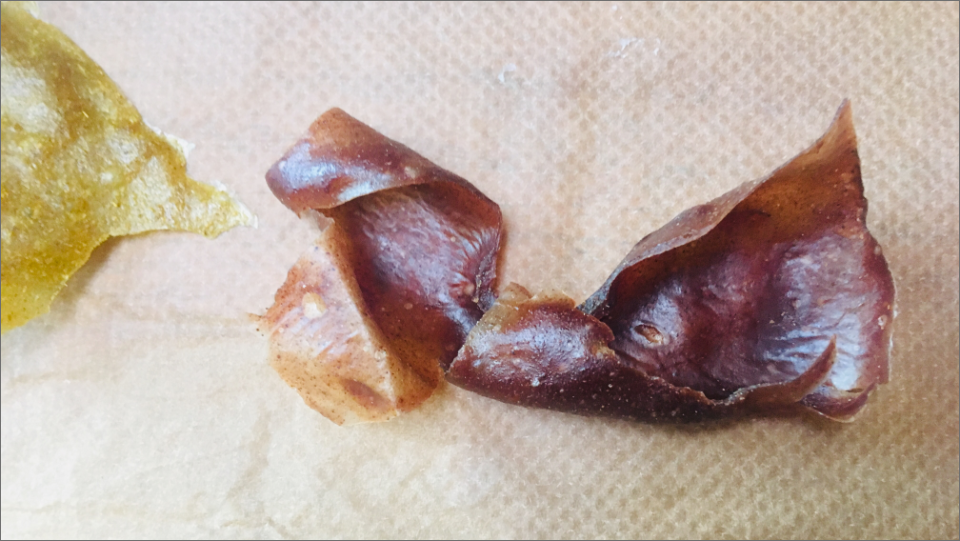

Bioplastic
Souvenir project (uitwisseling met Bezalel Academy of Arts and Design, Jeruzalem)
In 2018 ontwikkelde Esther voor een uitwisselingsproject met de Bezalel Academy of Arts and Design een verpakkingsmateriaal in de vorm van bioplastic.
Het materiaal werd vervaardigd uit natuurlijke, biologisch afbreekbare ingrediënten. Als kleurstof gebruikte ze kruiden zoals kaneel en curry.
